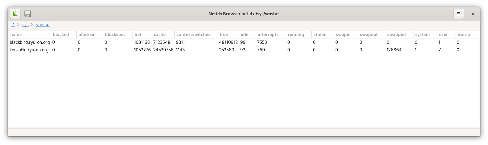

Publishing vmstat
In this example we build a shell script to publish the output of the venerable vmstat tool to netidx.
#! /bin/bash
BASE="/sys/vmstat/$HOSTNAME"
vmstat -n 1 | \
while read running \
blocked \
swapped \
free \
buf \
cache \
swap_in \
swap_out \
blocks_in \
blocks_out \
interrupts \
context_switches \
user \
system \
idle \
waitio \
stolen
do
echo "${BASE}/running|z32|${running}"
echo "${BASE}/blocked|z32|${blocked}"
echo "${BASE}/swapped|z32|${swapped}"
echo "${BASE}/free|u64|${free}"
echo "${BASE}/buf|u64|${buf}"
echo "${BASE}/cache|u64|${cache}"
echo "${BASE}/swap_in|z32|${swap_in}"
echo "${BASE}/swap_out|z32|${swap_out}"
echo "${BASE}/blocks_in|z32|${blocks_in}"
echo "${BASE}/blocks_out|z32|${blocks_out}"
echo "${BASE}/interrupts|z32|${interrupts}"
echo "${BASE}/context_switches|z32|${context_switches}"
echo "${BASE}/user|z32|${user}"
echo "${BASE}/system|z32|${system}"
echo "${BASE}/idle|z32|${idle}"
echo "${BASE}/waitio|z32|${waitio}"
echo "${BASE}/stolen|z32|${stolen}"
done | \
netidx publisher --spn publish/${HOSTNAME}@RYU-OH.ORG --bind 192.168.0.0/24
Lets dissect this pipeline of three commands into it's parts. First
vmstat itself, if you aren't familiar with it, is part of the procps
package on debian, which is a set of fundamental unix tools like
pkill, free, and w which would have been familiar to sysadmins
in the 80s.
vmstat -n 1
prints output like this
eric@ken-ohki:~$ vmstat -n 1
procs -----------memory---------- ---swap-- -----io---- -system-- ------cpu-----
r b swpd free buff cache si so bi bo in cs us sy id wa st
2 0 279988 4607136 1194752 19779448 0 0 5 48 14 8 15 6 79 0 0
0 0 279988 4605104 1194752 19780728 0 0 0 0 1800 3869 4 1 95 0 0
0 0 279988 4605372 1194752 19780632 0 0 0 0 1797 4175 3 1 96 0 0
0 0 279988 4604104 1194752 19781672 0 0 0 0 1982 4570 4 1 95 0 0
0 0 279988 4604112 1194752 19780648 0 0 0 0 1941 4690 3 2 95 0 0
-n means only print the header once, and 1 means print a line
every second until killed. Next we pass these lines to a shell while
loop that reads the line using the builtin read command into a shell
variable for each field. The field names were changed to be more
descriptive. In the body of the while loop we echo a path|typ|value
triple for each field. e.g. if we don't run the final pipe to netidx publisher the output of the while loop looks something like this.
/sys/vmstat/ken-ohki.ryu-oh.org/running|z32|1
/sys/vmstat/ken-ohki.ryu-oh.org/blocked|z32|0
/sys/vmstat/ken-ohki.ryu-oh.org/swapped|z32|279988
/sys/vmstat/ken-ohki.ryu-oh.org/free|u64|4644952
/sys/vmstat/ken-ohki.ryu-oh.org/buf|u64|1194896
/sys/vmstat/ken-ohki.ryu-oh.org/cache|u64|19775864
/sys/vmstat/ken-ohki.ryu-oh.org/swap_in|z32|0
/sys/vmstat/ken-ohki.ryu-oh.org/swap_out|z32|0
/sys/vmstat/ken-ohki.ryu-oh.org/blocks_in|z32|5
/sys/vmstat/ken-ohki.ryu-oh.org/blocks_out|z32|48
/sys/vmstat/ken-ohki.ryu-oh.org/interrupts|z32|14
/sys/vmstat/ken-ohki.ryu-oh.org/context_switches|z32|9
/sys/vmstat/ken-ohki.ryu-oh.org/user|z32|15
/sys/vmstat/ken-ohki.ryu-oh.org/system|z32|6
/sys/vmstat/ken-ohki.ryu-oh.org/idle|z32|79
/sys/vmstat/ken-ohki.ryu-oh.org/waitio|z32|0
/sys/vmstat/ken-ohki.ryu-oh.org/stolen|z32|0
No surprise that this is the exact format netidx publisher requires
to publish a value, so the final command in the pipeline is just
netidx publisher consuming the output of the while loop.
Running this on two of my systems results in a table viewable in the browser with two rows,

Because of the way the browser works, our regular tree structure is
automatically turned into a table with a row for each host, and a
column for each vmstat field. So we've made something that's
potentially useful to look at with very little effort. There are many
other things we can now do with this data, for example we could use
netidx record to record the history of vmstat on these machines, we
could subscribe, compute an aggregate, and republish it, or we could
sort by various columns in the browser. How about we have some fun and
pretend that all the machines running the script are part of an
integrated cluster, as if it was that easy, and so we want a total
vmstat for the cluster.
#! /bin/bash
BASE='/sys/vmstat'
declare -A TOTALS
declare -A HOSTS
netidx resolver list -w "${BASE}/**" | \
grep -v --line-buffered "${BASE}/total/" | \
sed -u -e 's/^/ADD|/' | \
netidx subscriber | \
while IFS='|' read -a input
do
IFS='/' path=(${input[0]})
host=${path[-2]}
field=${path[-1]}
if ! test -z "$host" -o -z "$field"; then
HOSTS[$host]="$host"
TOTALS["$host/$field"]=${input[2]}
T=0
for h in ${HOSTS[@]}
do
((T+=TOTALS["$h/$field"]))
done
echo "${BASE}/total/$field|${input[1]}|$T"
fi
done | netidx publisher --spn publish/${HOSTNAME}@RYU-OH.ORG --bind 192.168.0.0/24
Lets dissect this script,
netidx resolve list -w "${BASE}/**"
This lists everything under /sys/vmstat recursively, and instead of
exiting after doing that, it keeps polling every second, and if a new
thing shows up that matches the glob it lists the new thing. The
output is just a list of paths, e.g.
...
/sys/vmstat/total/blocked
/sys/vmstat/total/buf
/sys/vmstat/total/system
/sys/vmstat/blackbird.ryu-oh.org/swap_out
/sys/vmstat/ken-ohki.ryu-oh.org/buf
/sys/vmstat/ken-ohki.ryu-oh.org/idle
...
The next two commands in the pipeline serve to filter out the total
row we are going to publish (don't want to recursively total things
right), and transform the remaining lines into commands to netidx subscriber that will cause it to add a subscription. e.g.
...
ADD|/sys/vmstat/ken-ohki.ryu-oh.org/waitio
ADD|/sys/vmstat/blackbird.ryu-oh.org/blocked
ADD|/sys/vmstat/blackbird.ryu-oh.org/context_switches
ADD|/sys/vmstat/blackbird.ryu-oh.org/free
...
The above is what gets fed into the netidx subscriber command. So in
a nutshell we've said subscribe to all the things anywhere under
/sys/vmstat that are present now, or appear in the future, and
aren't part of the total row. Subscriber prints a line for each
subscription update in the form of a PATH|TYP|VAL triple, e.g.
..
/sys/vmstat/ken-ohki.ryu-oh.org/swap_out|z32|0
/sys/vmstat/ken-ohki.ryu-oh.org/blocks_in|z32|0
/sys/vmstat/ken-ohki.ryu-oh.org/blocks_out|z32|16
/sys/vmstat/ken-ohki.ryu-oh.org/interrupts|z32|1169
/sys/vmstat/ken-ohki.ryu-oh.org/context_switches|z32|3710
/sys/vmstat/ken-ohki.ryu-oh.org/user|z32|3
/sys/vmstat/ken-ohki.ryu-oh.org/system|z32|1
/sys/vmstat/ken-ohki.ryu-oh.org/idle|z32|96
...
That gets passed into our big shell while loop, which uses the read
builtin to read each line into an array called input. So in the body
of each iteration of the the while loop the variable input will be
an array with contents e.g.
[/sys/vmstat/ken-ohki.ryu-oh.org/swap_out, v32, 25]
Indexed starting at 0 as is the convention in bash. We split the path
into an array called path, the last two elements of which are
important to us. The last element is the field (e.g. swap_out), and
the second to last is the host. Each line is an update to one field of
one host, and when a field of a host is updated we want to compute the
sum of that field for all the hosts, and then print the new total for
that field. To do this we need to remember each field for each host,
since only one field of one host gets updated at a time. For this we
use an associative array with a key of $host/$field, thats
TOTALS. We also need to remember all the host names, so that when we
are ready to compute our total, we can look up the field for every
host, that's HOSTS. Finally we pass the output of this while loop to
the publisher, and now we have a published total row.